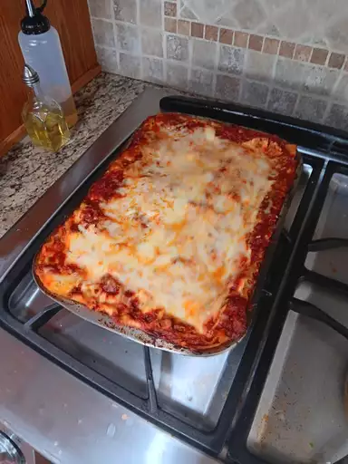

Lasagna Recipe

Delicious homemade lasagna
Ingredients
- 9 lasagna noodles
- 1 lb ground beef (or ground turkey)
- 1 onion, chopped
- 2 cloves garlic, minced
- 1 can (24 oz) tomato sauce
- 1 can (14.5 oz) diced tomatoes
- 2 teaspoons dried basil
- 1 teaspoon dried oregano
- Salt and pepper to taste
- 2 cups shredded mozzarella cheese
- 1 cup ricotta cheese
- 1/2 cup grated Parmesan cheese
- Fresh basil leaves for garnish (optional)
Instructions
- Preheat your oven to 375°F (190°C).
- Cook the lasagna noodles according to package instructions until al dente. Drain and set aside.
- In a large skillet, cook the ground beef (or turkey) over medium heat until browned. Add chopped onions and minced garlic, cook until onions are translucent.
- Stir in the tomato sauce, diced tomatoes, dried basil, dried oregano, salt, and pepper. Simmer the sauce for about 10 minutes.
- In a mixing bowl, combine the ricotta cheese and half of the shredded mozzarella cheese.
- Spread a thin layer of the meat sauce on the bottom of a 9x13-inch baking dish. Arrange 3 lasagna noodles over the sauce.
- Spread a layer of the ricotta mixture over the noodles, then top with more meat sauce. Repeat layers, ending with a layer of meat sauce on top.
- Sprinkle the remaining shredded mozzarella cheese and grated Parmesan cheese over the top.
- Cover the baking dish with aluminum foil and bake in the preheated oven for 25 minutes.
- Remove the foil and bake for an additional 10-15 minutes, until the cheese is bubbly and lightly golden.
- Let the lasagna cool for a few minutes before slicing. Garnish with fresh basil leaves if desired.
- Serve hot and enjoy your delicious homemade lasagna!